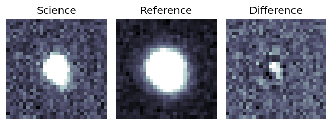
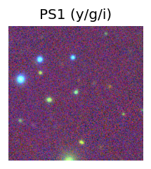
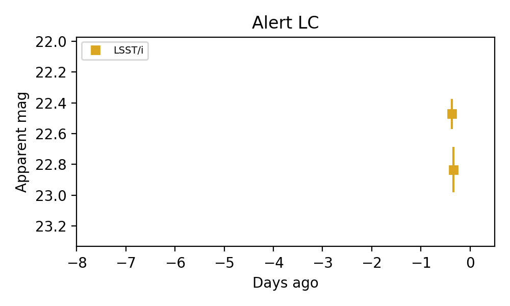
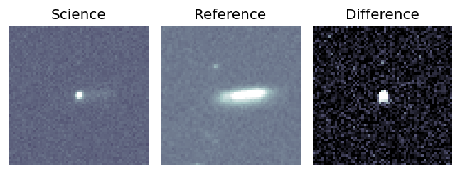
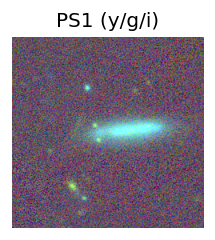
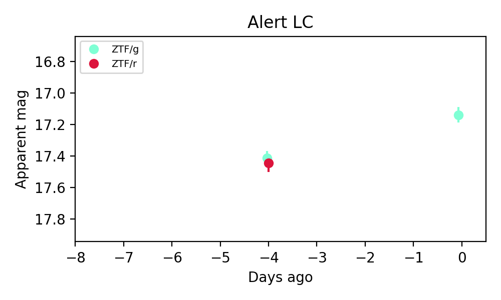
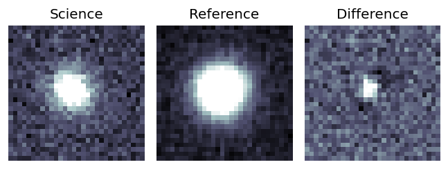
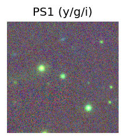
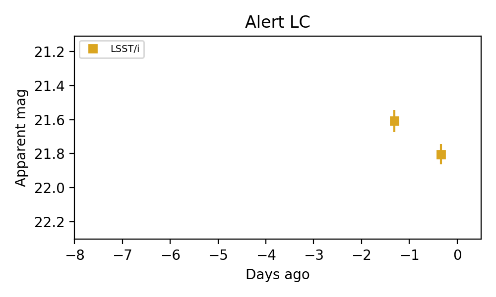

Candidate List 20260701Last night — ZTF: 1,032 passed basic cuts (8 young) · LSST: 483 passed basic cuts (83 young)Previous Day Next Day
Section 1: New Sources (age<1d) Section 2: Old (1-5d) sources observed last nightplaceholder
Section 1: New Afterglow/FBOT Cands Last Night (1)
1. [LSST] 170609066628874437 (Afterglow?) [Back to Top] [Fritz Alert] [Fritz Source] [Lasair]RA, Dec: 215.76838, -16.8297 14h23m4.41s, -16d-49m-46.91sGalactic (l, b): 332.38924, 40.74232 WARNING: -2.47 deg from ecliptic plane ext(g-r) = 0.083

TESS: Sectors [ 91 115]
PS1: 0 sources in 3 arcsec
LegacySurvey: 1 sources in 3 arcsec Closest: d = 0.06 arcsec, 146.9 deg (east of north) photoz=0.19 (68% bounds 0.11, 0.28), type=DEV peak abs mag = -17.39 (68% bounds -16.13, -18.41)

Rise Rate:
Fade Rate:
i: 13.3 mag/day
Section 2: Older Sources Observed Last Night (2)
0. [ZTF] ZTF26abegqcy (FBOT?) [Back to Top] [Share] [Trigger Swift] [Fritz Alert] [Fritz Source] [Lasair]RA, Dec: 346.13584, 42.05358 23h 4m32.60s, 42d 3m12.90sGalactic (l, b): 102.54681, -16.54792 ext(g-r) = 0.164

TESS: Sectors [16 56 57 83 84]
PS1: 1 source in 3 arcsec Closest: d = 3.30 arcsec photoz=0.04+/-0.00 peak abs mag = -19.81
LegacySurvey: 0 sources in 3 arcsec

Extinction-corrected gr color:
From alerts: -0.2 +/- 0.07 mag
Rise Rate:
g: 0.86 mag/day
r: 0.83 mag/day
Fade Rate:
1. [LSST] 170604676796907608 (Afterglow?) [Back to Top] [Fritz Alert] [Fritz Source] [Lasair]RA, Dec: 217.11003, -15.03278 14h28m26.41s, -15d-1m-58.01sGalactic (l, b): 335.03159, 41.71415 WARNING: -0.35 deg from ecliptic plane ext(g-r) = 0.092

TESS: Sectors 91
PS1: 0 sources in 3 arcsec
LegacySurvey: 1 sources in 3 arcsec Closest: d = 0.05 arcsec, 104.2 deg (east of north) photoz=0.21 (68% bounds 0.2, 0.23), type=REX peak abs mag = -18.59 (68% bounds -18.43, -18.75)

Rise Rate:
Fade Rate:
i: 0.2 mag/day